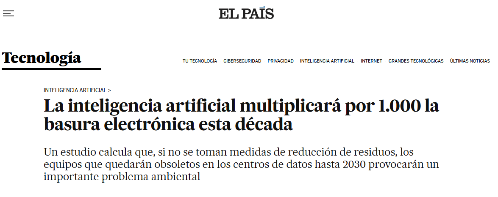
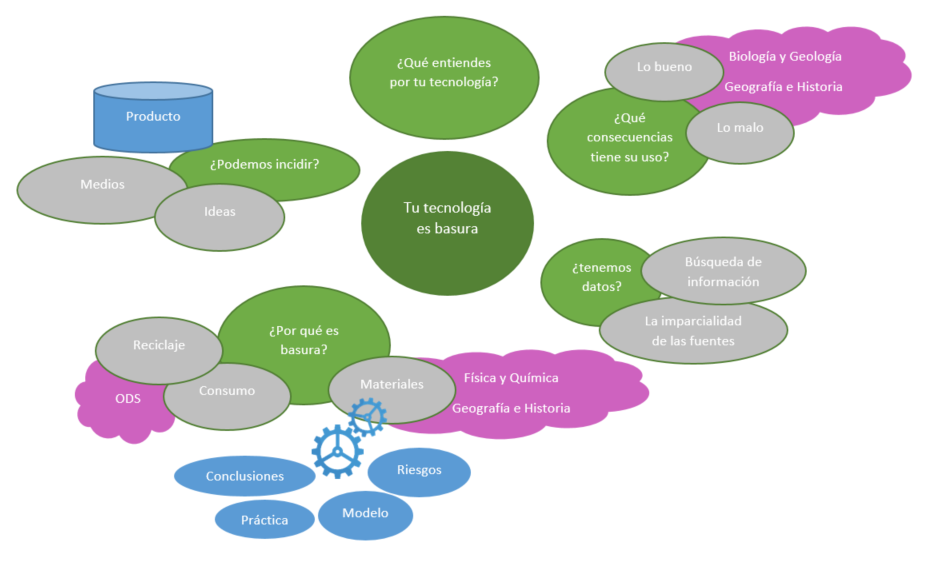
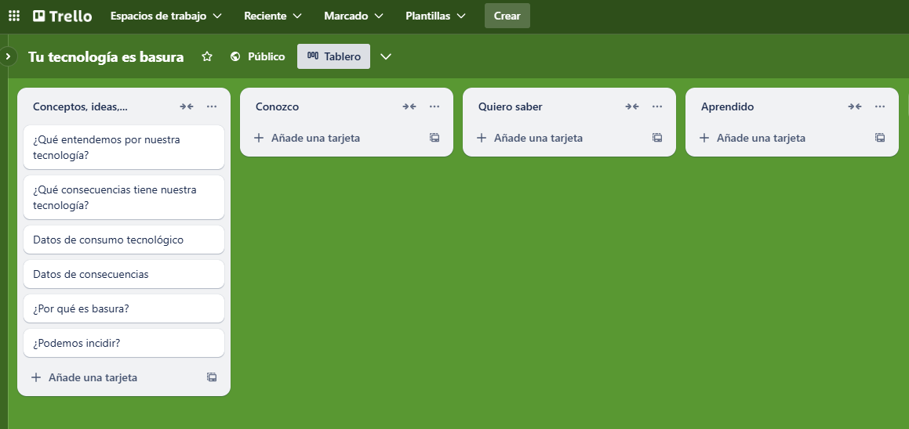

Los tiempos de duración que marcaremos en minutos, deben entenderse como ayuda al desarrollo de las actividades y tomarse de forma flexible, adaptándose y en algunos casos desplazando o eliminando en función del contexto del aula y las características de nuestro alumnado.
 Actividad 1: Introducción a la situación de aprendizaje
Actividad 1: Introducción a la situación de aprendizaje
Preguntamos a chatGPT, tal como vemos en la imagen inicio ('Hola chat, estoy preparando una situación de aprendizaje...') y le preguntamos al alumnado si lo han usado alguna vez.
Ponemos en pantalla la noticia:

https://elpais.com/tecnologia/2024-10-28/la-inteligencia-artificial-multiplicara-por-1000-la-basura-electronica-esta-decada.html
Alternativa audio:
https://www.bbva.com/es/sostenibilidad/podcast-recicla-tus-aparatos-electronicos-y-ayuda-a-reducir-la-basura-tecnologica/
Actividad 2: Activación ideas previas
Además de chatGPT... ¿Qué otras IAs usáis o conocéis?
¿Sabéis quién decide los videos de TikTok que os aparecen al abrir?
¿Usáis móviles? ¿Se han roto o estropeado alguna vez? ¿Qué hicisteis con él?
Actividad 3: Presentación plan de trabajo
Explicar, que pese al inicio con chatGPT, la situación de aprendizaje la hemos desarrollado partiendo de la elaboración de un mapa conceptual (ANEXO I).
Mostrarlo y explicarlo:

https://drive.google.com/drive/folders/1hcpeklNCCnKK-55o6w6BktgIppEhaw0Q?dmr=1&ec=wgc-drive-globalnav-goto&hl=es
Informamos de que una de las herramientas que utilizaremos durante toda la situación de aprendizaje es un tablero KWL y explicaremos su significado y utilidad.
El tablero pretende ser una herramienta de trabajo para el aula. Será un elemento dinámico que puede crecer, modificarse y sustituir a medida que desarrollemos la situación y repasaremos en cada sesión. Y al que le podremos añadir información y resultados que obtengamos.
La presentamos con la serie de preguntas relacionadas con nuestro mapa conceptual que iremos valorando conjuntamente si podemos mover de columna.

https://trello.com/b/bpydEwrz/tu-tecnologia-es-basura
Creación de grupos de 6.
Serán ellos quienes los creen pero se les pedirá que sean heterogéneos, que tengan en consideración el género, la procedencia, las capacidades y cualquier elemento que aumente la diversidad. También que elijan un portavoz para esta sesión que comunicará el grupo y sus integrantes.
Antes de que realicen los grupos, preguntaremos por qué creen que le pedimos heterogeneidad. Recogeremos sus planteamientos mediante una lluvia de ideas de los motivos, de las ventajas que aporta la diversidad. La podemos completar con al menos:
Aprendemos unos de otros
Nos hace más creativos
Fortalece la comunidad
Promueve el respeto y la paz
Ayuda a resolver problemas juntos
Fomenta un futuro mejor para todos
Tras ello, dejamos que formen los grupos.
Esto puede ser complejo y algunos grupos no serán diversos. Pero primaremos su elección para motivar y facilitar el acceso al aprendizaje.
Les pediremos que además del portavoz, designen distintos roles, que deben ir rotando en cada sesión.
1. Portavoz
2. Secretario
3. Responsable del buen rollo
4. Supervisor
5. Investigador
6. Diseñador
Acabar en positivo.
Reconocer que si bien tenemos un problema al que todos y todas estamos contribuyendo, ellos son la solución. Hablar de activismo de gente muy joven, seguro que conocen a Greta Thunberg.
El activismo climático de Thunberg comenzó cuando persuadió a sus padres para que adoptaran un estilo de vida que redujeran la huella de carbono de su familia. A los 15 años, en 2018, Thunberg comenzó a faltar a la escuela, prometiendo permanecer fuera de la escuela hasta después de las elecciones nacionales suecas en un intento de influir en el resultado.
Protestó frente al parlamento sueco, donde pidió una acción más contundente contra el cambio climático sosteniendo un cartel de 'Huelga escolar por el clima' y repartiendo folletos informativos.
Acabar con resumen de la clase y repaso de tarjetas K-W-L
Icons by freepik